About
I am a senior researcher at ETRI in Daejeon, South Korea. My research interests include user recognition from near-infrared eye images captured by AI smart glasses, such as off-angle iris recognition and continuous authentication.
I received my Ph.D. in Computer Science and Engineering from Sogang University in 2023, advised by Prof. Insung Ihm. My doctoral research was on real-time ray tracing for virtual reality, covering foveated rendering for head-mounted displays and view synthesis for live immersive video.
Research Interests
- Off-angle iris recognition and continuous authentication User recognition from near-infrared eye images captured by AI smart glasses, where the eye is seen at an angle rather than head-on.
- Real-time ray tracing and foveated rendering Ray tracing for head-mounted displays and mobile GPUs: foveated and selective sampling, adaptive undersampling, and CUDA/OptiX acceleration.
- Immersive video and virtual view synthesis 6DoF immersive video rendering from multiple RGB-D streams, depth-image-based view synthesis, and ray-traced 3D background models for disocclusion filling.
- Multimodal 3D reconstruction and spatial understanding Depth camera pose tracking, multi-sensor RGB-D fusion, and real-time reconstruction of dynamic objects and spaces for XR.
- Volume rendering for medical imaging Physically based volume rendering of noisy 3D ultrasound data, and AI-assisted volume registration and stitching.
- GPU algorithms and parallel optimization Real-time processing of large-scale 3D data with CUDA, OpenCL, and OptiX, and rendering pipelines that combine graphics with AI models.
Thesis
-
Ph.D. Thesis, Dept. of Computer Science and Engineering, Sogang University, 2023
International Papers
-
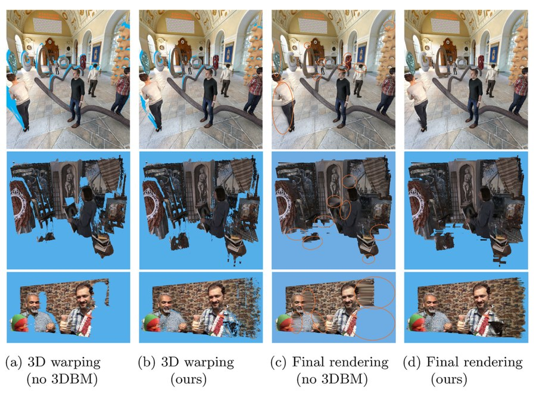
-
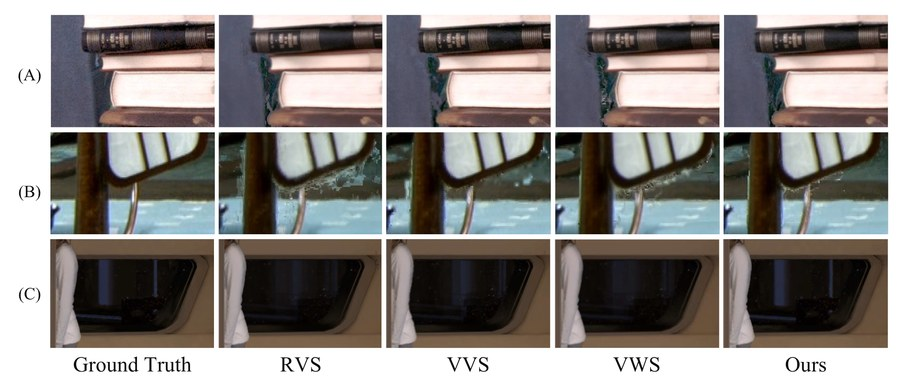
View synthesis with sparse light field for 6DoF immersive video
ETRI Journal, 44(1):24–37, 2022
-
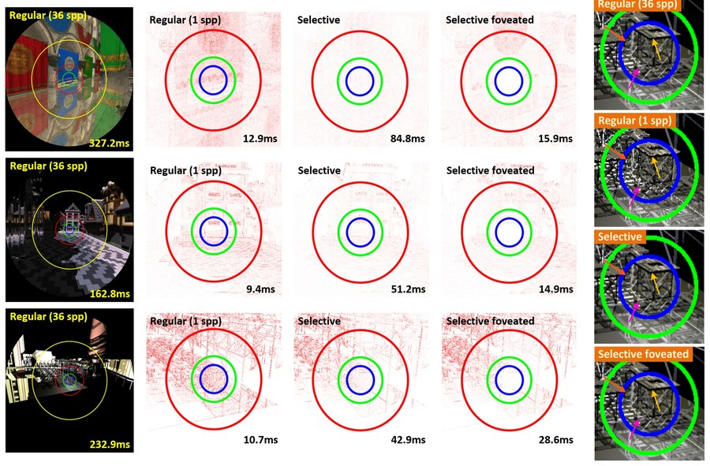
Selective Foveated Ray Tracing for Head-Mounted Displays
IEEE International Symposium on Mixed and Augmented Reality (ISMAR), Bari, Italy, pp. 413–421, 2021
-
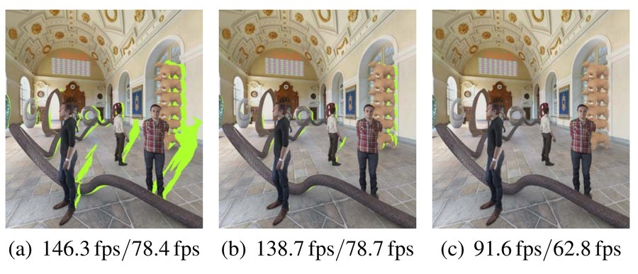
Disocclusion-Reducing Geometry for Multiple RGB-D Video Streams
IEEE Conference on Virtual Reality and 3D User Interfaces (Abstracts and Workshops), Lisbon, Portugal, pp. 603–604, 2021
-
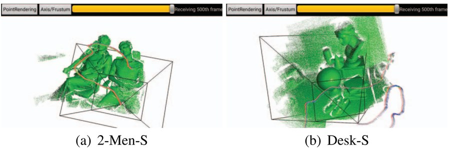
Low-Cost Depth Camera Pose Tracking for Mobile Platforms
IEEE International Symposium on Mixed and Augmented Reality (ISMAR) (Poster Papers), Merida, Mexico, pp. 123–126, 2016
IEEE XploreVideo 1(2-Men-S)Video 2(Desk-S)Video 3(Desk-S, captured)Video 4(Desk-K)Video 5(Office-K)Image(Reconstruction Results)
-
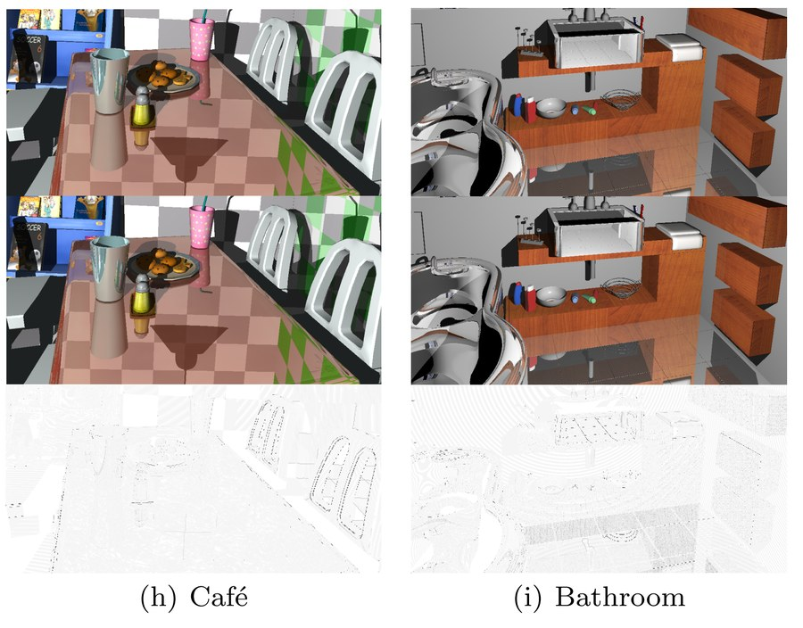
Adaptive Undersampling for Efficient Mobile Ray Tracing
The Visual Computer (Special Issue of Computer Graphics International 2016), 32(6–8):801–811, 2016
SpringerSlidesVideo 1(Kitchen)Video 2(Bathroom)Image 1(Cafe)Image 2(Ben)Image 3(Conference)Image 4(Kitchen)Image 5(Kitchen 2x2)Image 6(Kitchen 4x4)Image 7(Bathroom)Image 8(Bathroom 2x2)Image 9(Bathroom 4x4)Image 10(San Miguel)


Domestic Papers
-
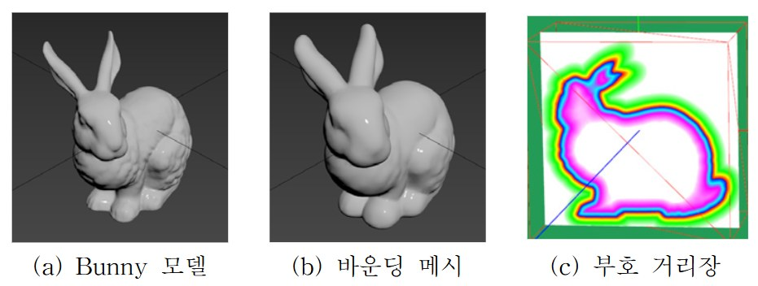
Ray Tracing-based Real-time Collision Detection Using Bounding Mesh of Polygonal Model
Journal of KIISE, 51(2):173–183, 2024
-
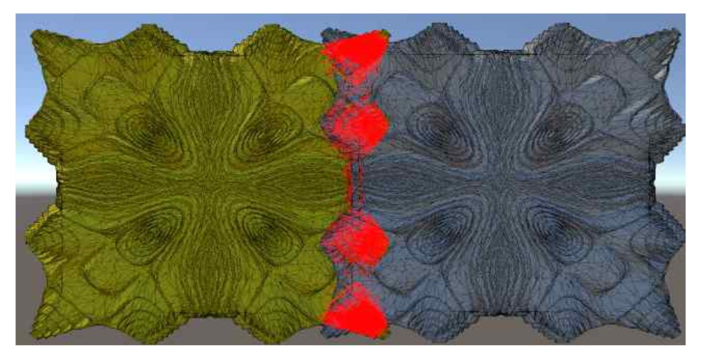
Ray-tracing Hardware-based Real-time Collision Detection Using Bounding Mesh
Korea Computer Congress (KCC), Jeju, Korea, pp. 1430–1432, 2023
🏆 Best Paper Award
-
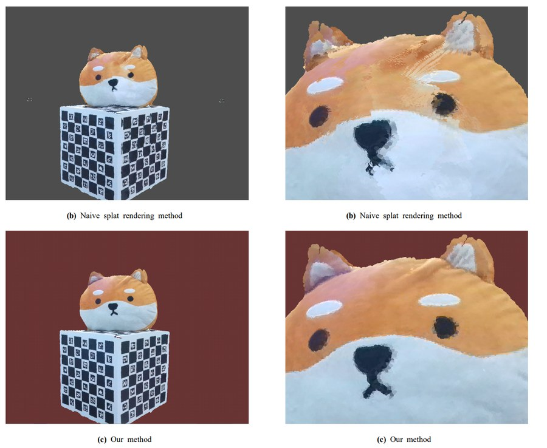
Effective Ray-tracing based Rendering Methods for Point Cloud Data in Mobile Environments
Journal of the Korea Computer Graphics Society, 29(3):93–103, 2023
-
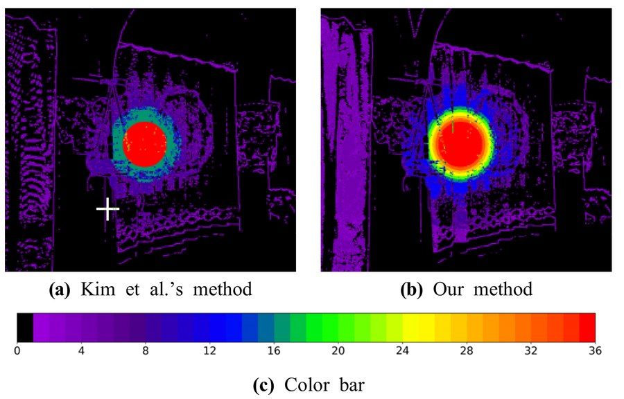
Adaptive Foveated Ray Tracing Based on Time-Constrained Rendering for Head-Mounted Display
Journal of the Korea Computer Graphics Society, 28(3):113–123, 2022
-
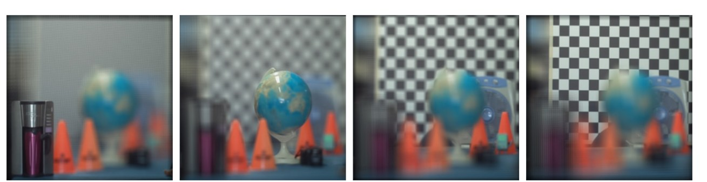
Development of 4D Light Field Camera Systems Using Raspberry Pi Clusters
KIISE Winter Conference, Gangwon, Korea, pp. 1110–1112, 2015
🏆 Best Paper Award
Patents
-
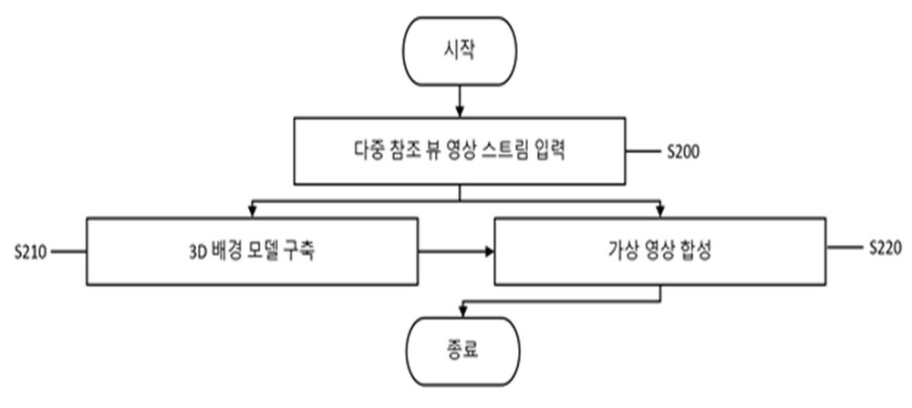
-
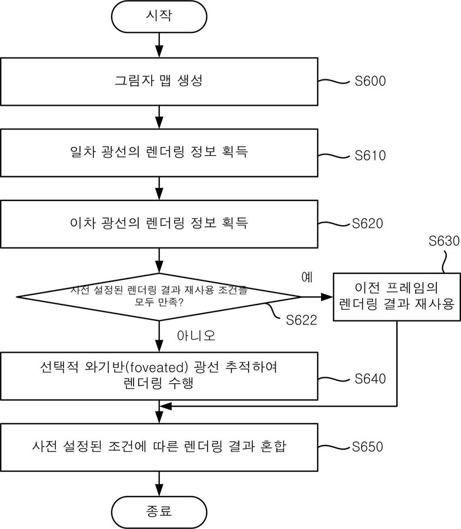
Method for Ray Tracing for Virtual Reality Headset Based on Selective Sampling
Korea Patent, No. 10-2910568, 2026
-
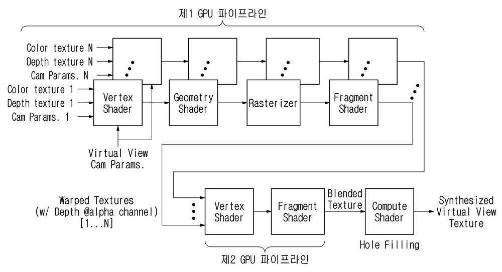
Method and Apparatus for Synthesizing Virtual View Image Based on GPU Pipeline
Korea Patent, No. 10-2917058, 2026
-
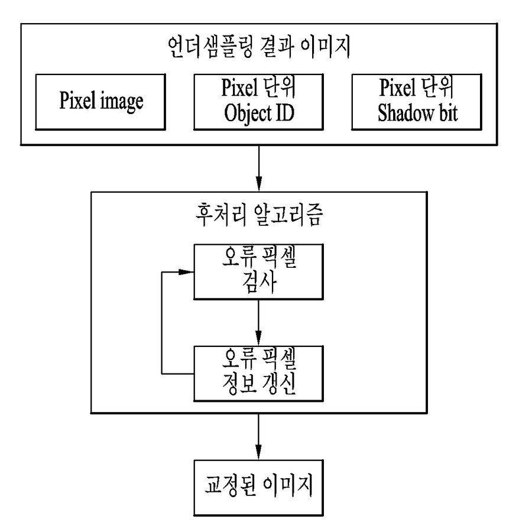
-
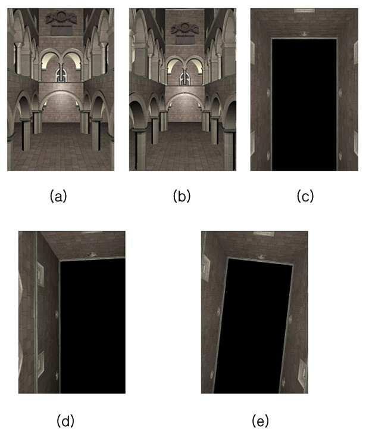
Method for Rotating Virtual Camera on Touchscreen-Based Device
Korea Patent, No. 10-1420727, 2014